Lateral drift correction
Long time-series data acquisitions usually suffer from sample drift. ThunderSTORM supports two methods for lateral drift correction. The first is based on tracking fiducial markers inserted into the sample, and the second on cross-correlation of similar structures in reconstructed super-resolution images. The trajectory of the relative sample drift can be saved to a file and applied later, possibly to a different dataset. For example, drift estimated from a sub-region of the data can be applied the whole dataset, or drift estimated from one channel can be applied to correct drift in another channel.
Fiducial markers
A common approach for the drift correction is performed by tracking fiducial markers inserted into the sample and by subtracting their relative motion from the molecular localizations. ThunderSTORM can identify fiducial markers automatically from the localization results as molecules that stay in the ‘‘on’’ state at one position for a substantial amount of time. Therefore, all localizations that arise from more than a given number of frames are considered as fiducial markers and are used for the drift correction. Assigning molecular localizations in subsequent frames to a single fiducial marker is performed by the merging algorithm.
The trajectory of the relative sample drift is obtained by combing
all identified fiducial markers into a single dataset. The relative
sample drift at each frame 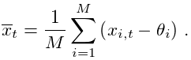, in either of the coordinates
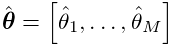 and  , is computed according to the formula
, is computed according to the formula
| 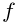 | (1) |
Here 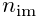 is the number of fiducial markers, 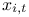 is an absolute position of an 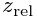-th marker at a frame 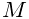, 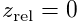, and 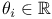 is an unknown offset which has to be subtracted from the absolute marker position to obtain the relative sample drift.
The offset 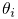 is estimated by least squares minimization of a sum of squared differences between relative marker position and the relative sample drift, summed over all markers and frames. The optimization is defined by the formula
| 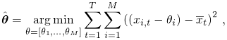 | (2) |
where 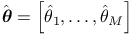 are the values of the estimated offset for each of the markers.
In reality, some of the points may be missing, because markers might not be localized in some frames. If this is the case, the relative sample drift in Equation (1) is computed only from the corresponding number of fiducial markers and the corresponding sum of squared differences in Equation (2) is set zero.
The final drift trajectory is smoothed by robust locally weighted regression [1]. Users can specify the maximum merging distance, the minimum number of frames, where a molecule must appear to be considered as a fiducial marker, and the trajectory smoothing factor.
Note that analyzing samples with fiducial markers yields localizations of both the blinking fluorophores and the fiducial markers. This will slow down computations. Faster execution and better precision can be achieved by limiting the SMLM data analysis process to regions containing only the fiducial markers. The drift trajectory can be saved to a file and applied later to the whole dataset.
How to set the parameters
Fiducial markers are automatically detected as molecules that stay in the “on” state at one position for a substantial amount of time. The lateral tolerance for identification of a marker is controlled by the setting “Max distance”. The parameter “Min marker visibility ratio” controls the fraction of frames wherein the molecule must be detected to be considered as a fiducial marker. The ratio should be set higher than the longest “on” state for a regular blinking molecule. Values higher than 0.5 might not work due to possibility of missed detections. “Trajectory smoothing factor” controls smoothness of the drift trajectory and ranges from 0 (no smoothing) to 1 (highest smoothing). Note that analyzing samples with fiducial markers yields localizations of both the blinking fluorophores and the fiducial markers. This may slow down the merging algorithm used for automatic identification of the markers. For faster marker identification, the merging process can be limited to regions containing only the fiducial markers. The drift trajectory can then be saved to a file and applied later to the whole dataset.
Cross-correlation
ThunderSTORM also supports lateral drift correction using the method of Mlodzianoski et al. [2]. Here, the list of localized molecules is split into 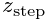 batches based on the frame in which they appeared. Each batch is used to create one super-resolution image. The presumption of this method is that similar structures will appear in all reconstructed images. Cross-correlation methods are used to determine the shift between the first image and each of the subsequent images. This leads to 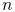 cross-correlation images, where the shift in the position caused by the drift corresponds to the relative position between the global intensity maximum peaks. The localized peaks are assigned to the central frame of each batch sequence and the drift for intermediate frames is determined by local regression using third degree polynomials. The original molecular coordinates are corrected for the drift using the estimated values.
In our implementation, super-resolution images are created by the average shifted histograms method, cross-correlation images are computed by Fast Fourier Transform methods as implemented in ImageJ, and the location of global intensity maximum peaks is determined with sub-pixel precision using the radial symmetry method. The number of batches and the magnification of super-resolution images is defined by users. For better stability of the solution, intensity maximum peaks are first localized on cross-correlation images computed from reconstructed images with magnification of one. The peak position is refined afterwards using cross-correlation images computed from super-resolution images with a user specified magnification. The final position of the peak is obtained as a local intensity maximum in close proximity to the peak obtained at lower magnification.
How to set the parameters
The parameter “Number of bins” controls the time resolution of the drift trajectory by splitting the image sequence into an appropriate number of bins. Molecular localizations from each bin are used to reconstruct one super-resolution image. “Magnification” controls the lateral resolution of the drift trajectory through the magnification of the reconstructed images. A small number of localized molecules requires a smaller number of bins so that there will be enough data in each sub-sequence. This decreases the time resolution of the drift estimation. A smaller magnification setting can also help to obtain resolvable peaks in cross-correlation images created from images with less data or with unclear structures. Cross-correlation images with detected peaks can be viewed by checking the "Show cross-correlations" checkbox.
References
- [1] (1979) Robust Locally Weighted Regression and Smoothing Scatterplots, Journal of the American Statistical Association 74 (368), pp. 829–836. External Links: Document. Cited by: Fiducial markers.
- [2] (2011) Sample drift correction in 3D fluorescence photoactivation localization microscopy, Optics Express 19 (16), pp. 15009–19. External Links: Document. Cited by: Cross-correlation.
![[LOGO]]()